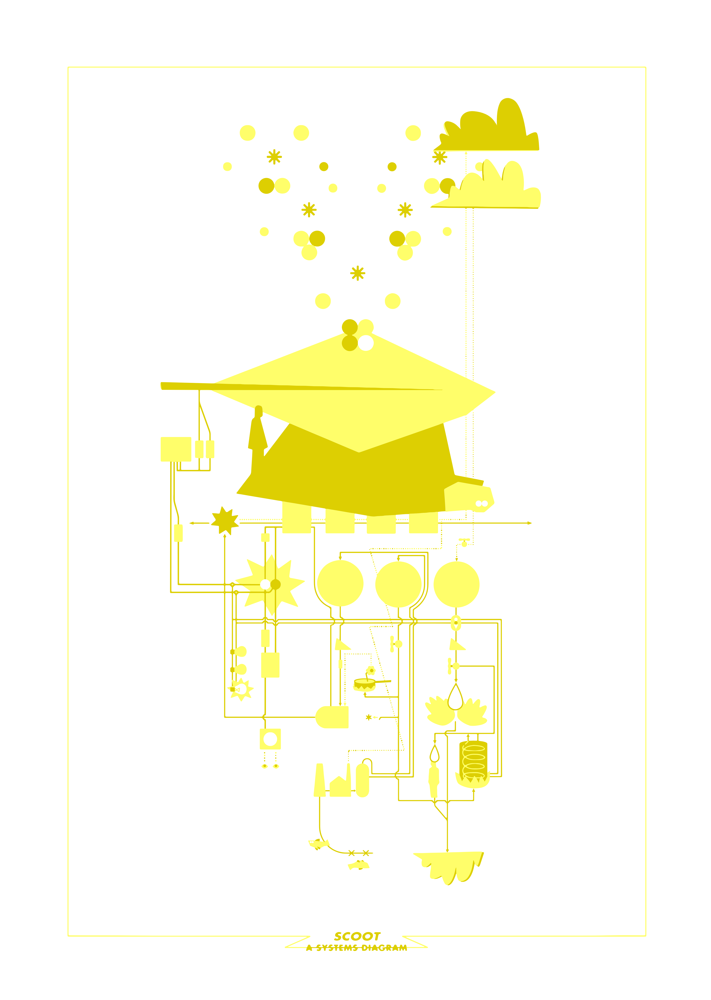

print 4 sale
40 units
Edition of 9
2023
56*76cm
enquire within
I'm in a pickle! The little spaceship that I've lived on for a little over a year now has presented me with a few real puzzlers: limited resources, limited space, and a funny back to name a few. Now, the most pressing puzzle has come from a recent discontinuation of the propane bottle I use for cooking, refrigeration, and heating water and air. The boat, made in the 80s, was designed around this bottle, and without major fibreglass/plumbing modifications, no other readily available bottle size will fit. As my fellow boaters on the Wilderness Beaver Boat Forum (Scoot's make) also can't seem to solve this problem, I've decided to see if I can discover an answer through unconventional means.
Since time is obviously of importance with this quest, I've begun by designing and hand-screen-printing SCOOT: A SYSTEMS DIAGRAM. Printed on 300gsm Somerset paper, there are 3 in the US, 4 in the UK, and one framed in the, designed by Alice!, coffee shop @debbiejolondon. On sale for 40 or 50 monetary units, depending on your currency of choice.* Informed and inspired by the writings of Donella Meadows on systems dynamics, this diagram maps out Scoot's embedded systems. In drawing their elements and interconnections, I've begun to learn the behaviors of internal systems as well as their dependency on external systems. Some of which have been abstracted and included, whereas others are represented by the mighty cloud.
As a greater experiment in finding the harder solution, I'd rather not, just yet, take the route of creating a larger gas locker for a larger bottle. À la LA highway conundrum, the more gas I have, the more I will burn. I'd also rather not go to another supplier, as the alternative is significantly more expensive and inaccessible from the canal.
So I am presented with an opportunity to find an interesting solution through a previously unexplored way of seeing: systems thinking. Designers and engineers are lauded for solving problems with acute actions and manipulating the world in small, understandable pieces (powerbanks for the homeless). I'm sure a great benefactor of the industrial revolution was this logical and reductionist way of thinking, and therefore the predominant method of current industrial climate action. On the other hand, we cheese-eating, cheese-intollerant humans are intimately familiar with our own illogical and complex systems: our bodies. We can have an intuitive understanding of how to work with them, even without rational analysis. SCOOT: A SYSTEMS DIAGRAM is a complementary use of these two valid methods of thought. It is my intuitive attempt at understanding petroleum distillation, my water consumption, or solar electricity production. With something between an engineered solution and artist-ed solution, I'm hoping to find a way of redesigning interrelationships as a fix more sustainable than the simple upgrade of an individual element. Will Jake ever shower again? Stay tuned for the answer; next time on... The Holistic Pickle!